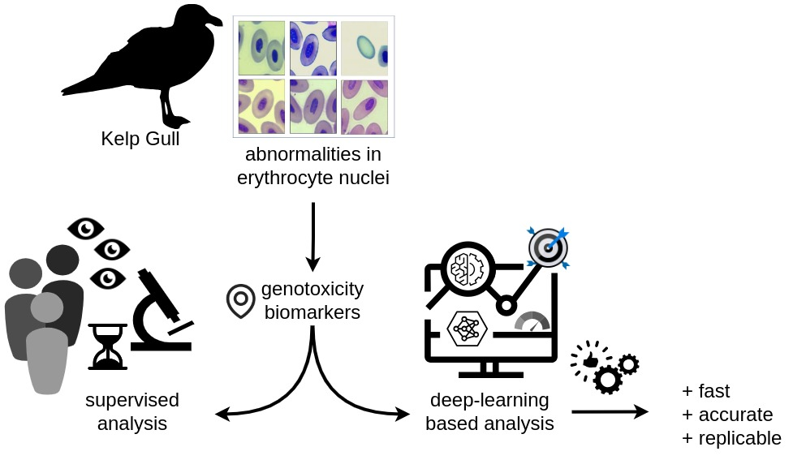

Advanced nuclear anomaly detection in microscopy images
Nuclear abnormalities in avian erythrocytes have been used as biomarkers of genotoxicity in several species. Anomalous shapes are usually detected in the nuclei by means of microscopy inspection. However, due to inter- and intra-observer variability, classification of these blood cell abnormalities could be problematic for replicating research. A deep learning model was developed to improve standardization in identifying the biological configurations of biological importance. This method has proven to be a fast and efficient approach that reduces the dependence on human supervision in the classification of nuclear abnormalities in avian erythrocytes, and can be adapted to be used in similar contexts with little effort.
Recently, nuclear abnormalities in avian erythrocytes have been used as biomarkers of genotoxicity in several species. Anomalous shapes are usually detected in the nuclei by means of microscopy inspection. However, due to inter- and intra-observer variability, the classification of these blood cell abnormalities could be problematic for replicating research. Deep learning, as a powerful image analysis technique, can be used in this context to improve standardization in identifying the biological configurations of medical importance. In this study, we present a standardized deep learning model for identifying and classifying abnormal shapes in erythrocyte nuclei in blood smears of the hemispheric and synanthropic Kelp Gull (Larus dominicanus). We trained two convolutional backbones (ResNet101 and ResNet50 architectures) to obtain models capable of detecting and classifying these abnormalities in blood cells.
The analysis was performed at three discrimination levels of classification, with broad categories subdivided into increasingly specific subcategories (level 1: “normal”, “abnormal”, “other” / level 2: “normal”, “ENAs”, “micronucleus”, “other” / level 3: “normal”, “irregular”, “displaced”, “enucleated”, “micronucleus”, “other”). Performance was more than adequate and very similar in levels 1 and 2 (F1-score 84.6\% and 83.6\%, and accuracy 83.9\% and 82.6 \%). In level 3, performance was lower (F1-score 65.9\% and accuracy 80.8\%). It can be concluded that level 2 of analysis should be considered the most appropriate as it is more specific than level 1, with similar quality of performance.
This method has proven to be a fast, efficient and standardized approach that reduces the dependence on human supervision in the classification of nuclear abnormalities in avian erythrocytes, and can be adapted to be used in similar contexts with little effort. Currently, we are working on expanding the analysis categories, improving the model's performance, and extending the analysis to other bird species.